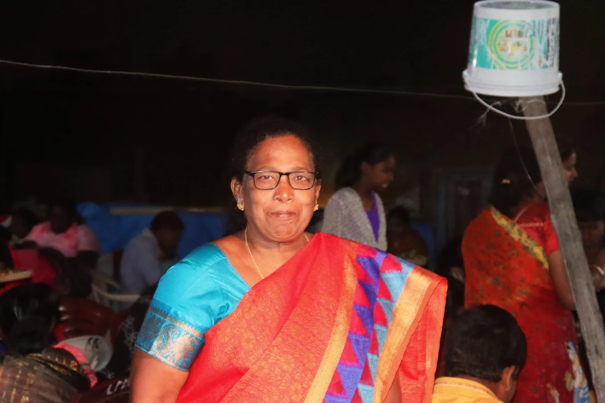
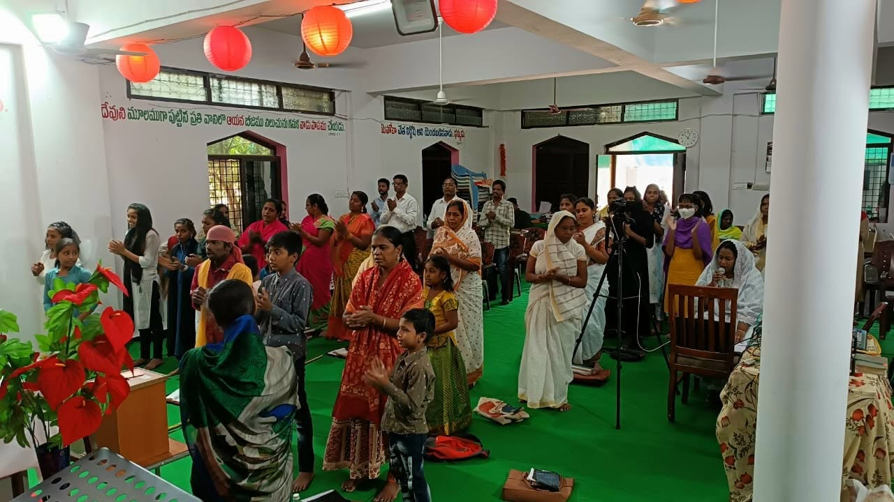
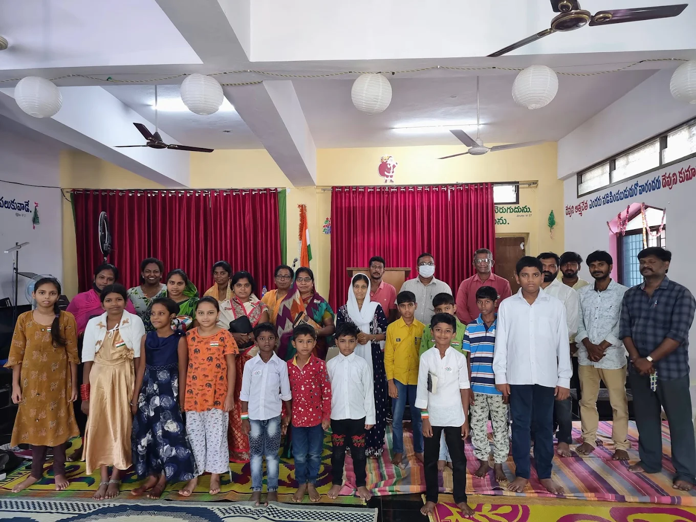
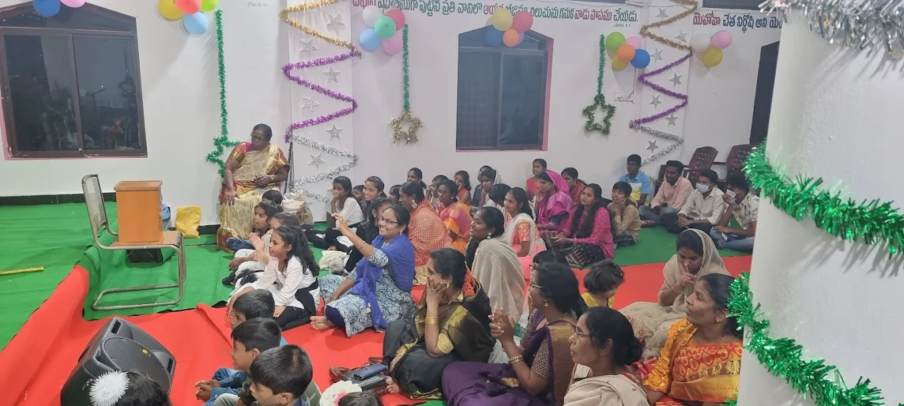
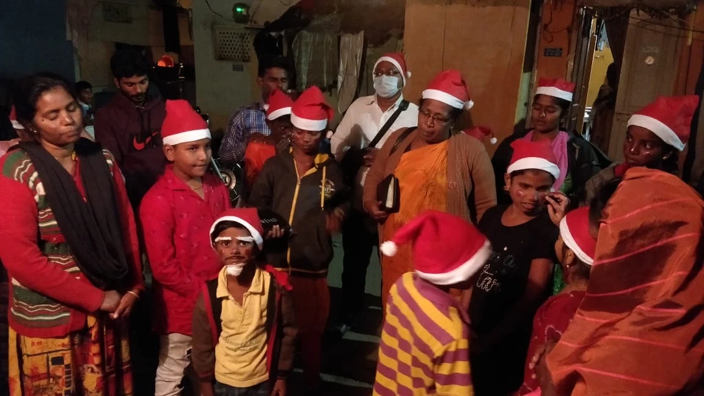

Faith
Growing in faith through God's Word, prayer, worship and fellowship.
Serving God, sharing His Word, strengthening believers and reaching lives with the everlasting love of Jesus Christ.
A place to worship, grow, serve and experience the transforming love of Jesus Christ.
Jeeva Nadi Ministries exists to proclaim the Gospel of Jesus Christ, encourage believers in their faith, and bring hope to people through the Word of God.
We believe in the importance of prayer, worship, Biblical teaching and Christian fellowship as we seek to grow together in our relationship with God.
THE RIVER OF LIFEJeeva Nadi Ministries is dedicated to spreading the message of God's love and helping people grow in faith through the Word of God.
Through worship, prayer, Bible teaching, fellowship, outreach and service, the ministry seeks to touch lives and glorify Jesus Christ.
Our desire is to help people discover hope, purpose and new life through Jesus Christ.
To proclaim God's Word, encourage faith and share the hope of the Gospel.

Faith • Hope • Love
Our ministry is guided by values that encourage believers to grow in Christ and serve others with love.
Growing in faith through God's Word, prayer, worship and fellowship.
Demonstrating the love of Christ through compassion, kindness and service.
Sharing the hope, peace and new life found through Jesus Christ.
Serving God and people with humility, dedication and love.
A life dedicated to prayer, preaching, service and the work of God.

Trust in the LORD with all your heart and lean not on your own understanding.
— Proverbs 3:5Pastor Christina Malligary is a devoted servant of God who has dedicated her life to prayer, preaching and serving the Lord.
Her ministry is centered on seeking God's guidance, faithfully proclaiming His Word, praying for people and encouraging believers to grow in their relationship with Jesus Christ.
Through a life of continuous prayer, preaching, worship and service, she seeks to remain faithful to the calling God has placed upon her life.
A life devoted to prayer and intercession for people and the ministry.
Faithfully sharing the Word of God and encouraging believers in their faith.
Caring for people and demonstrating Christ's love through service.
Giving her life to God's calling and faithfully serving His purpose.
Her desire is simple: to serve God faithfully, proclaim His Word, remain devoted to prayer and help people come closer to Jesus Christ.
A glimpse of the ministry, fellowship and outreach activities of Jeeva Nadi Ministries.




Discover moments from our ministry, worship, teaching, service and Scripture memory videos.
Watch, learn and grow through messages and moments from our ministry.
A special time of thanksgiving, fellowship and serving people with the love of Christ.
Learning and remembering God's commandments through Scripture and teaching.
Encouraging children and believers to learn, remember and live by God's Word.
A Scripture-based message reminding us to put on the full armor of God.
Remembering the triumphal entry of Jesus Christ and reflecting on His journey of love and salvation.
Watch more messages, worship and ministry videos on our YouTube channel.
Join us as we worship, learn God's Word, pray together and share the hope of Jesus Christ.